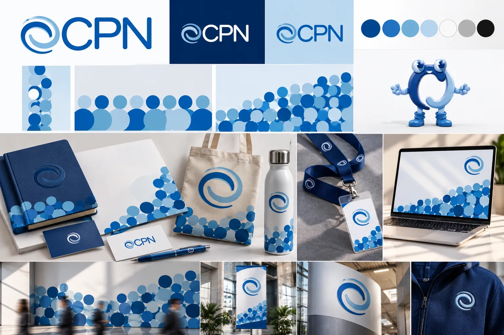
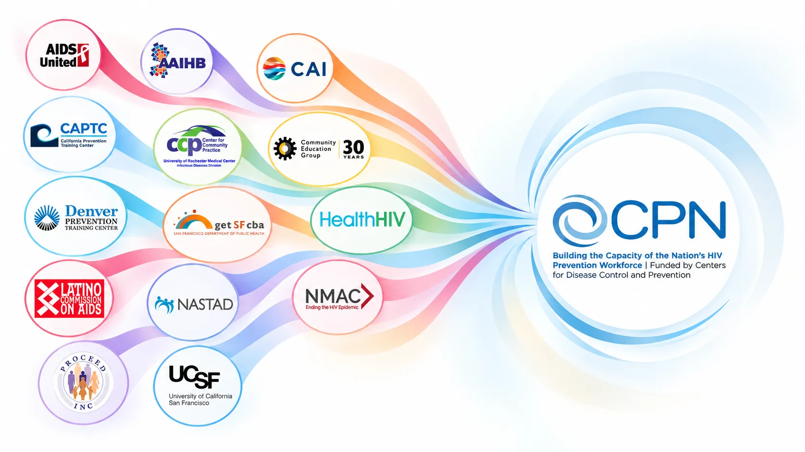
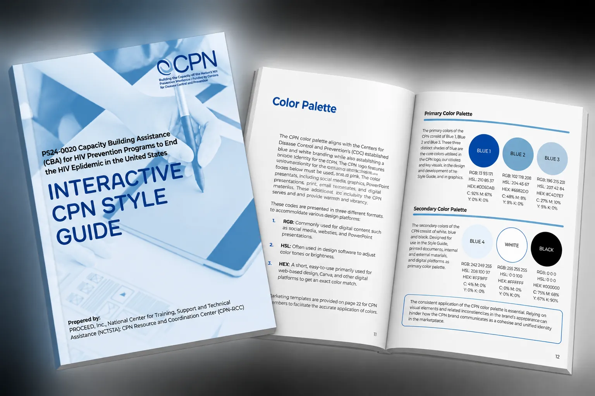

Case Study 01 · Brand Strategy & National Rollout
Transforming 14 Independent Organizations Into One Recognizable National Brand
How research, brand strategy, and integrated marketing united 14 independent organizations under one identity, driving national awareness and service utilization.

14 organizations.
No shared identity.
The CDC brought together 14 established organizations to provide free HIV prevention training and technical assistance nationwide.
Each had its own reputation, audience, and identity. But together, they lacked a recognizable national brand.
The challenge wasn't simply creating better marketing materials. It was making 14 independent organizations recognizable as one network.

Before building the brand,
I needed the data.
I designed and led a national brand awareness study reaching over 1,500 organizations and nearly 19,000 professionals.
had never heard of the Capacity Building Assistance Provider Network.National brand awareness study
While audiences recognized individual organizations, they didn't recognize the network connecting them.
This wasn't just a visibility problem. It was a brand alignment problem.
One brand. One message.
One connected network.
I developed a strategy around four priorities.
Brand Identity
Created a unified positioning strategy and visual identity representing all 14 organizations.
Messaging
Established clear, consistent messaging around the network's purpose, services, and value.
Marketing Infrastructure
Developed shared guidelines, templates, and digital resources for consistent communication.
Partner Adoption
Built a marketing subcommittee and collaborative processes to secure buy-in and encourage adoption across the network.
From disconnected efforts
to one brand ecosystem.
Brand Development
Brand positioning, messaging, visual identity, guidelines, and communication resources.

Digital Marketing
Website, landing pages, email marketing, social media, and coordinated campaigns.
Experiential Marketing
National conference experiences, branded activations, signage, and promotional materials.
Partner Resources
Toolkits, presentation templates, and shared resources supporting consistent brand adoption.
One network.
Measurable national impact.
Increased from 7% to 53% in one year.
Annual cases served increased from 120 to 520.
Built an audience of more than 20,000 subscribers.
United 14 organizations under one shared brand identity and marketing foundation.
More organizations didn't just recognize the CPN. They began engaging with the network and requesting the free training and technical assistance it existed to provide.
The brand wasn't just more recognizable. It was driving engagement with the services it represented.
My Role
Marketing & Communications Manager
PROCEED, Inc. · Capacity Building Assistance Provider Network
2024 – Present
Next case study · 02